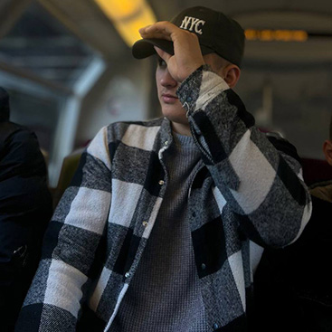
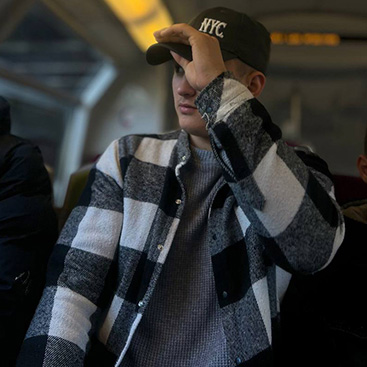

Я - Vasyl LoZyak.
 

Привіт! Це Василь Лозяк, і я розкажу вам трошки зі свого життя. Мені 20 років, і в даний момент я працюю на будівництві. Це цікава робота, яка завжди вимагає від мене відданості та наполегливості. Я люблю той факт, що кожен проєкт викликає нові виклики, і я отримую можливість розвиватися професійно. Коли настає час відпочинку, я інколи відправляюсь у ресторани, щоб насолодитися смачною їжею та провести час з друзями. Це моменти, коли я можу розслабитися та насолоджуватися життям. Варто відзначити, що я не прихильник куріння і алкоголю – вирішив давно, що здоров'я для мене важливіше.
Окрім роботи та відпочинку, я стежу за своїм фізичним станом. Регулярно відвідую спортзал, де тренуюся та дбаю про свою фізичну форму. Вважаю, що активний спосіб життя допомагає мені залишатися енергійним та витривалим у повсякденних справах. Зараз я також зацікавлений у вивченні англійської мови. Сприймаю це як можливість розширити свої горизонти і спілкуватися з людьми з різних країн. Крім того, я вчуся верстати сайти – це для мене захоплюючий і творчий процес. Все це складає частину мого щоденного життя. Я старався збалансувати роботу, відпочинок, здоров'я та самовдосконалення. Життя цікаве, і я завжди готовий взяти з нього найкраще.